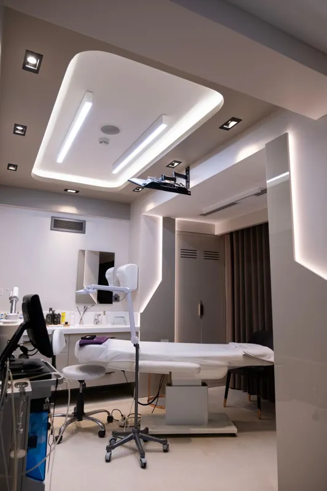

Clínicas
Clínica e consultório com manutenção marcada.
O atendimento não pode parar porque o aparelho pingou. A gente vê split, cassete e VRF, e passa o que será feito por escrito.
Visita técnica R$ 150, abatida se você fechar.

Imagem ilustrativaNão dizemos que a limpeza substitui regra sanitária do seu conselho. Dizemos o que o técnico faz no aparelho: filtro, turbina, serpentina e o diagnóstico se ele falhou.
- VRF ou vários splits: a proposta vem depois da visita.
- Manutenção preventiva a partir de R$ 450 por aparelho de 9 a 12 mil BTU.
- Contrato mensal ou trimestral, com valor depois do levantamento.
Perguntas diretas
Preciso pagar sinal?
Não. Você paga a visita técnica de R$ 150. Se fechar o serviço, esse valor é abatido. O pagamento do serviço é por Pix, depois, na conta da GR Tech.
O orçamento é por escrito?
É. Depois da visita, ele chega pelo app OLLI Orçamentos, para você ler antes de autorizar qualquer coisa além da visita.
Atendem geladeira e freezer?
Geladeira e freezer domésticos, não. Refrigeração de comércio a gente conversa na visita, sem preço inventado por mensagem.
É plantão de madrugada?
Não. O atendimento de visita é de segunda a sábado, das 8h às 18h.